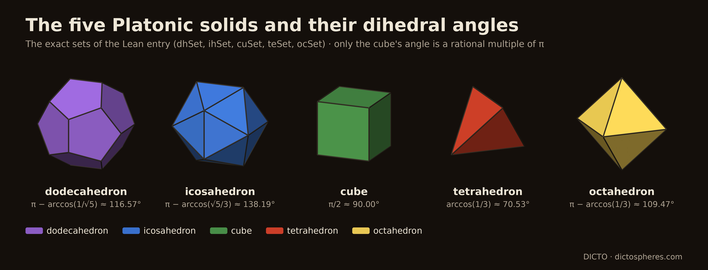
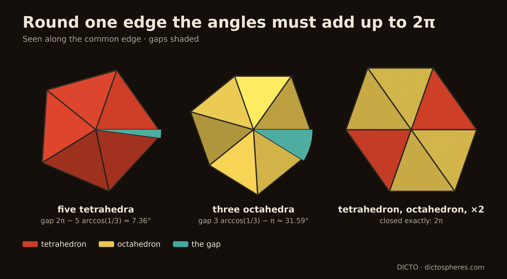

No tiling of space by regular tetrahedra, octahedra, dodecahedra or icosahedra, of any sizes and not necessarily face to face, stated as formalised in Lean 4
Stand five regular tetrahedra round one edge and a thin gap remains; six do not fit. Aristotle missed it. Here a computer checks that no arrangement at all, of any sizes, closes the gap.
In De Caelo III.8 Aristotle states that among the solids only the pyramid (the regular tetrahedron) and the cube fill space [2]. The claim stood for centuries; its refutation is credited to Regiomontanus in the fifteenth century, and Lagarias and Zong tell the full history [3]. The reason is one number: the dihedral angle of the regular tetrahedron is arccos(1/3) ≈ 70.53°, which lies strictly between 360°/6 and 360°/5 (Figure 2). Paper #44 [1] found, by hand, which sets of the five Platonic face pyramids (the cones from the centre over each face) fill space. This paper is the blueprint of a Lean 4 entry that proves the claim false in the strongest usual sense, and settles the other Platonic solids the same way.

How statements are marked. Formalised: the statement as worded is the Lean declaration named beside it, proved in the library with no sorry and only the axioms propext, Classical.choice, Quot.sound. The Lean text shown is copied from Challenge.lean of the entry; names are given without namespace.
Definition A (convex polytope). Formalised (sol, IsPoly). A convex polytope is a bounded set of the form {x : ⟨ai, x⟩ ≤ bi for all i}, for finitely many ai, bi.
def IsPoly (P : Set E) : Prop := Bornology.IsBounded P ∧ ∃ (ι : Type) (_ : Fintype ι) (a : ι → E) (b : ι → ℝ), P = sol a b
Definition B (tiling). Formalised (ConvexTiling). A tiling of space is a family of convex polytopes with interior points that cover space, have pairwise disjoint interiors, and are locally finite (finitely many meet any small ball). Tiles need not meet face to face.
structure ConvexTiling (ι : Type*) (E : Type*) [NormedAddCommGroup E] [InnerProductSpace ℝ E] where P : ι → Set E poly : ∀ i, IsPoly (P i) nonempty_interior : ∀ i, (interior (P i)).Nonempty cover : ∀ x, ∃ i, x ∈ P i disjoint : Pairwise fun i j => Disjoint (interior (P i)) (interior (P j)) locallyFinite : LocallyFinite P
Definition C (dihedral angle, read from the set). Formalised (tcone, linSpace, wedgeAngle, EdgeAngle). At a point x of P, the directions that stay in P form a cone. When the directions v with v and −v both in the cone span a line, x lies on an edge, and the angle there is 2π times the share of the unit disc perpendicular to that line taken up by the cone. No list of faces or edges is assumed: the angle is a property of the set.
def EdgeAngle (P : Set E) (θ : ℝ) : Prop := ∃ x ∈ P, finrank ℝ (linSpace (tcone P x)) = 1 ∧ wedgeAngle (tcone P x) (linSpace (tcone P x)) = θ
Definition D (similar copy; rational angles). Formalised (SimilarCopy, RationalAngles). Q is a similar copy of S when Q is the image of a positive multiple cS under an isometry of space (reflections allowed); each tile may have its own scale c. A set has rational angles when each of its dihedral angles is qπ for a rational q ≥ 0.
def SimilarCopy (Q S : Set E) : Prop := ∃ (g : E ≃ᵃⁱ[ℝ] E) (c : ℝ), 0 < c ∧ Q = g '' (c • S) def RationalAngles (P : Set R3) : Prop := ∀ θ, EdgeAngle P θ → ∃ q : ℚ, 0 ≤ q ∧ θ = q * π
Definition E (the five solids). Formalised (dhSet, ihSet, cuSet, teSet, ocSet). Each solid is the solution set of its face inequalities in exact coordinates: the tetrahedron with corners (1, 1, 1), (1, −1, −1), (−1, 1, −1), (−1, −1, 1); the octahedron with corners ±e1, ±e2, ±e3; the cube with corners (±1, ±1, ±1); the dodecahedron and the icosahedron with face data in ℚ(√5).
Copies of one Platonic solid, other than the cube, never fill space, whatever their sizes; and in any mixture of the five, the dodecahedron and the icosahedron can never take part.
Theorem 1 (Aristotle's error). Formalised (aristotle_error). There is no tiling of 3-space by similar copies of the regular tetrahedron (any sizes, reflections allowed, not necessarily face to face).
theorem aristotle_error {ι : Type*} (T : ConvexTiling ι R3) : ¬ ∀ i, SimilarCopy (T.P i) teSet
Theorem 2 (three more solids alone). Formalised (octa_alone, dodeca_alone, icosa_alone). The same holds for the regular octahedron, dodecahedron and icosahedron.
theorem octa_alone {ι : Type*} (T : ConvexTiling ι R3) : ¬ ∀ i, SimilarCopy (T.P i) ocSet
theorem dodeca_alone {ι : Type*} (T : ConvexTiling ι R3) : ¬ ∀ i, SimilarCopy (T.P i) dhSet
theorem icosa_alone {ι : Type*} (T : ConvexTiling ι R3) : ¬ ∀ i, SimilarCopy (T.P i) ihSet
Theorem 3 (helpers do not help). Formalised (no_tetra, no_octa, no_dodeca, no_icosa). In a tiling of 3-space in which every tile is a similar copy of one of these four solids or has rational angles, no tile is a copy of that solid. Shown for the tetrahedron; the other three read the same with ocSet, dhSet, ihSet.
theorem no_tetra {ι : Type*} (T : ConvexTiling ι R3)
(hk : ∀ i, SimilarCopy (T.P i) teSet ∨ RationalAngles (T.P i)) (i : ι) : ¬ SimilarCopy (T.P i) teSet
Theorem 4 (the five together). Formalised (platonic_mix). In a tiling of 3-space in which every tile is a similar copy of one of the five Platonic solids or has rational angles, no tile is a dodecahedron or an icosahedron.
theorem platonic_mix {ι : Type*} (T : ConvexTiling ι R3)
(hk : ∀ i, SimilarCopy (T.P i) teSet ∨ SimilarCopy (T.P i) ocSet ∨ SimilarCopy (T.P i) cuSet ∨
SimilarCopy (T.P i) dhSet ∨ SimilarCopy (T.P i) ihSet ∨ RationalAngles (T.P i)) (i : ι) :
¬ SimilarCopy (T.P i) dhSet ∧ ¬ SimilarCopy (T.P i) ihSet
Theorem 4 is sharp on the other side. Tetrahedra and octahedra together do fill space (the tetrahedral–octahedral honeycomb), and cubes fill space alone; Figure 2 shows why the angles allow the first.
Every dihedral angle is a sum of four basic angles with rational coefficients; round an edge they must add to 2π; a well-chosen weight shows that the solid's angle is too heavy to take part.

Lemma 5 (angles round an edge; #119, Lemma 2 [4]). Formalised (Lemma2.lean, from the packets entry). In a tiling as in Definition B, take a point on an edge of a tile. The tiles that contain the point contribute angles that add up to 2π, and each is a dihedral angle of that tile, or π (the point lies inside a face), or 2π (inside the tile).
Lemma 6 (independence; #119, Lemma 3 [4]). Formalised (lemma3, Angles.lean). With α = arctan φ, β = arccos(1/√6), γ = arccos √(2/3), the numbers π, α, β, γ are linearly independent over ℚ. The proof uses Niven's theorem (Mathlib niven) [5] and the fact that cos 2β = −2/3 and cos 2γ = 1/3 are rational with sin 2β, sin 2γ irrational.
The dihedral angles of the five solids, read from the Lean sets (te_co, oc_co, …, Fill.lean), are, in these coordinates:
| solid | dihedral angle | ≈ | as qπ + aα + bβ + cγ |
|---|---|---|---|
| dodecahedron | π − arccos(1/√5) = 2α | 116.57° | (0, 2, 0, 0) |
| icosahedron | π − arccos(√5/3) = 3π/2 − 2β | 138.19° | (3/2, 0, −2, 0) |
| cube | π/2 | 90° | (1/2, 0, 0, 0) |
| tetrahedron | arccos(1/3) = 2γ | 70.53° | (0, 0, 0, 2) |
| octahedron | π − arccos(1/3) = π − 2γ | 109.47° | (1, 0, 0, −2) |
The weight argument. For rationals u, v, t give the angle qπ + aα + bβ + cγ the weight q + ua + vb + tc; by Lemma 6 the weight of an angle is well defined. π has weight 1 and 2π weight 2. If every angle that can occur round an edge has weight ≥ 0, then, since the ring adds to 2π, each of its angles has weight at most 2 (ring_wt_le, tiling_wt_le, Fill.lean). Rational angles qπ, q ≥ 0, always have weight q ≥ 0. So it is enough to choose u, v, t that give the solid's own angle weight more than 2, while every angle allowed beside it keeps weight ≥ 0:
| theorem | (u, v, t) | weight of the excluded angle | other angles |
|---|---|---|---|
no_tetra | (0, 0, 2) | tetrahedron 4 | rational: q ≥ 0 |
no_octa | (0, 0, −1) | octahedron 3 | rational: q ≥ 0 |
no_dodeca | (2, 0, 0) | dodecahedron 4 | rational: q ≥ 0 |
no_icosa | (0, −1, 0) | icosahedron 7/2 | rational: q ≥ 0 |
platonic_mix | (2, −1, 0) | dodecahedron 4, icosahedron 7/2 | tetrahedron 0, octahedron 1, cube 1/2 |
Theorems 1 and 2 follow from Theorem 3 with no helper tiles, since a tiling has at least one tile. The angles of the five sets are read from the sets themselves, edge by edge, in exact arithmetic (GenTE.lean, GenOC.lean, GenCU.lean, and the dodecahedron and icosahedron files of the packets entry), so the proof depends on no picture and no floating-point value.
The mathematics. Aristotle's claim is in De Caelo III.8 [2]; its refutation is credited to Regiomontanus, and the history, including later claims that 12 or 20 tetrahedra fill the space round a point, is told by Lagarias and Zong [3]. The edge-angle argument for regular polyhedra and their pairs is stated by Gabbrielli, Jiao and Torquato [6]; Conway, Radin and Sadun studied which rational combinations of such angles occur [7]. Niven's theorem is [5]. Paper #44 [1] found by hand which sets of the Platonic face pyramids fill space, with the same rule that the angles round an edge add up to 2π (its Lemma 1). The angle machinery (Definitions A–D, Lemmas 5 and 6, the dodecahedron and icosahedron sets) is that of our packets entry #119 [4], which used the dodecahedron and the icosahedron only as helper tiles and stated no result on them alone; the tetrahedron, octahedron and cube sets, Theorems 1–4 and the weights above are new to this entry.
Earlier formal proofs: sources checked (24 November 2026). Web searches on tetrahedra not tiling space together with Lean, Isabelle, Coq, HOL and "arccos(1/3)"; the Lean Zulip archive; Mathlib v4.35.0-rc2 (which has Niven's theorem, Mathlib.NumberTheory.Niven, but no tiling of space by polytopes); the Isabelle Archive of Formal Proofs; Coq-Polyhedra; HOL Light and the Flyspeck proof of the Kepler conjecture, which works with tetrahedra and their dihedral angles but does not state that they fail to tile; Freek Wiedijk's list Formalizing 100 Theorems [8], whose item 50, the number of Platonic solids, is formalised in Lean, HOL Light and Isabelle and classifies the solids without any tiling statement; Mizar and Metamath by web search only. We found no earlier machine-checked proof that regular tetrahedra, octahedra, dodecahedra or icosahedra do not fill space.
The repository is platonic-fill-lean at commit 541a0fab604e569b17b8173ab63691920095b3bd (meta line), the commit that passed Palomar's preflight. Toolchain leanprover/lean4:v4.35.0-rc2, Mathlib v4.35.0-rc2. Challenge.lean holds the definitions and the eight statements with every proof sorry and imports only Mathlib; Solution.lean is the Challenge word for word with each proof taken from the library; comparator.json names the eight theorems for Palomar's comparator.
git clone https://github.com/DICTOR-Master/platonic-fill-lean cd platonic-fill-lean git checkout 541a0fab604e569b17b8173ab63691920095b3bd lake exe cache get # Mathlib's compiled files lake build # Build completed successfully
The theorems are classical: Aristotle's error is Regiomontanus's [3], and the angle argument is that of Gabbrielli, Jiao and Torquato [6]. This work gives:
Mathlib.NumberTheory.Niven.DICTO · dictospheres.com